Constructing a noisy training input by interpolating between a clean image and Gaussian noise. Below is a clean image along with added noise at t=0.25, t=0.5, and t=0.75
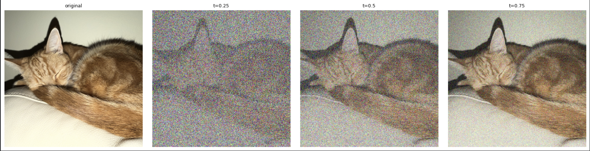
Side by side comparison of the noisy input images from above and Gaussian-denoised images at blur sigma = 8.0, 4.0, and 2.0.
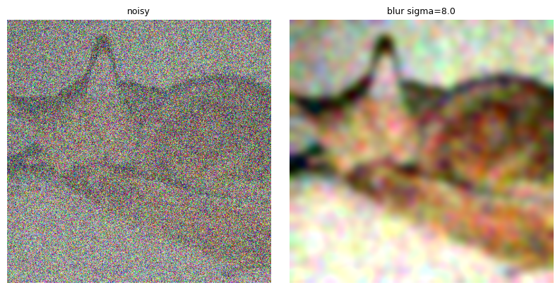
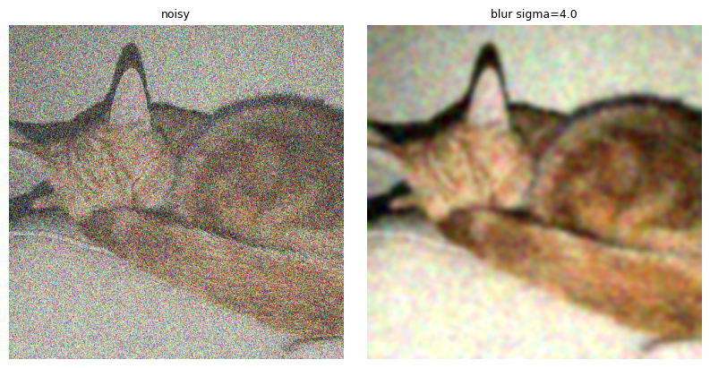
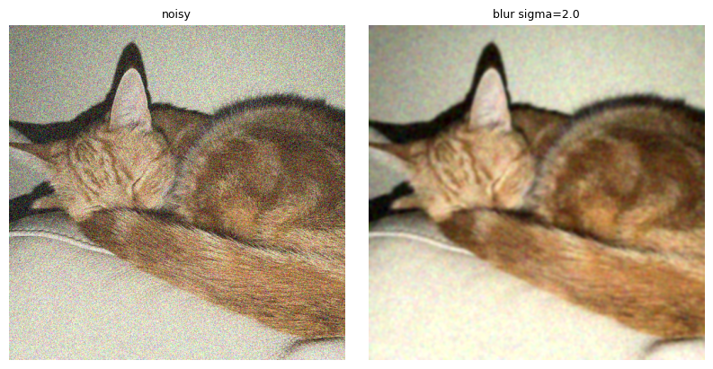
Side by side comparison of the original image, the noisy input, and the one-step denoised image using a pretrained flow model.
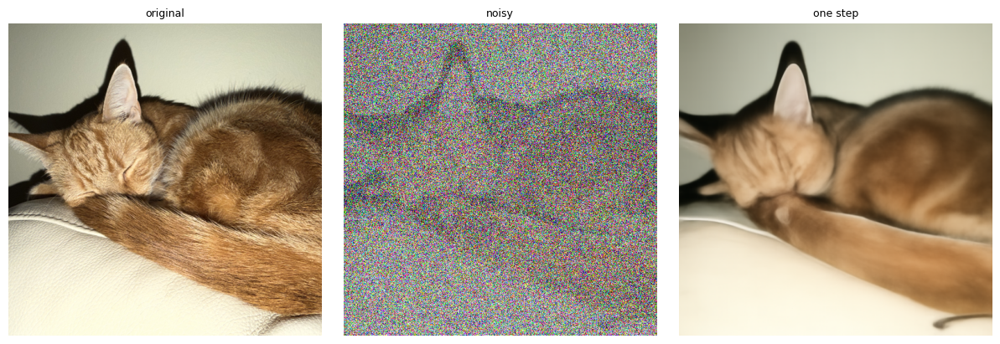
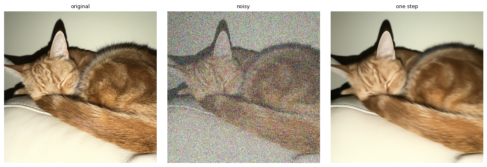
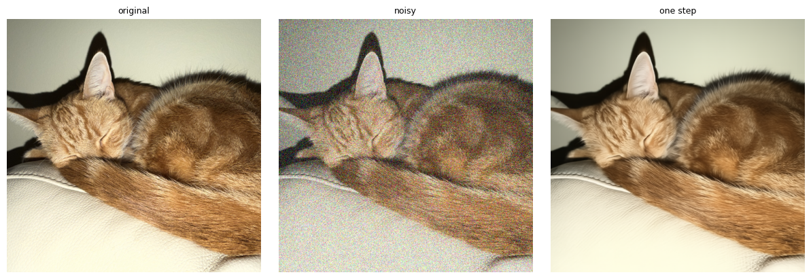
At noise levels t = 0.25, 0.50, and 0.75, the model's predicted update (1 − t) v̂ captures the coarse structure of the ground truth update x1 − xt but not its fine-grained noise, so the per-pixel root mean square error is highest at edges and high frequency details and shrinks as t increases.
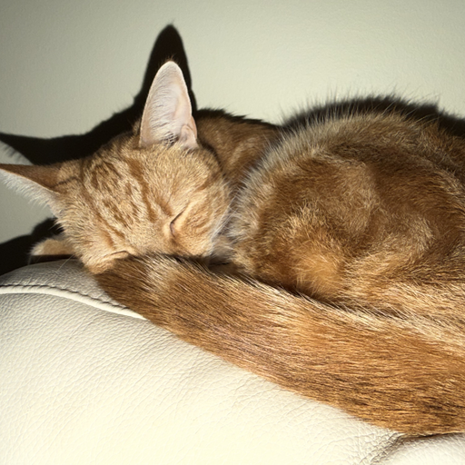
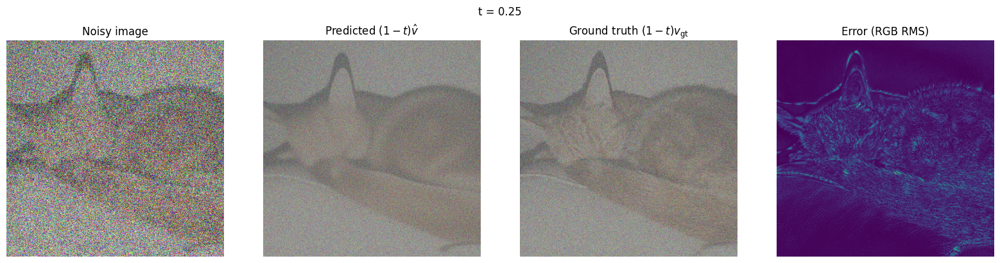
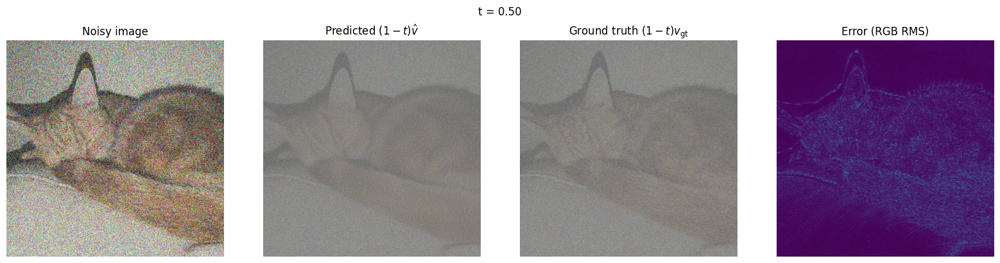
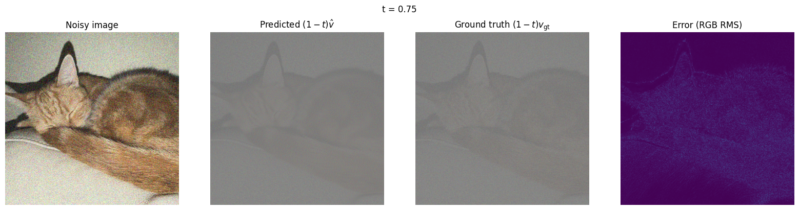
Using Euler sampling, we can iteratively denoise the image by sampling from the model's predicted update at each step. Below is the denoised image along with side-by-side comparisons with the original image, the Gaussian-denoised image, and the one-step denoised image..
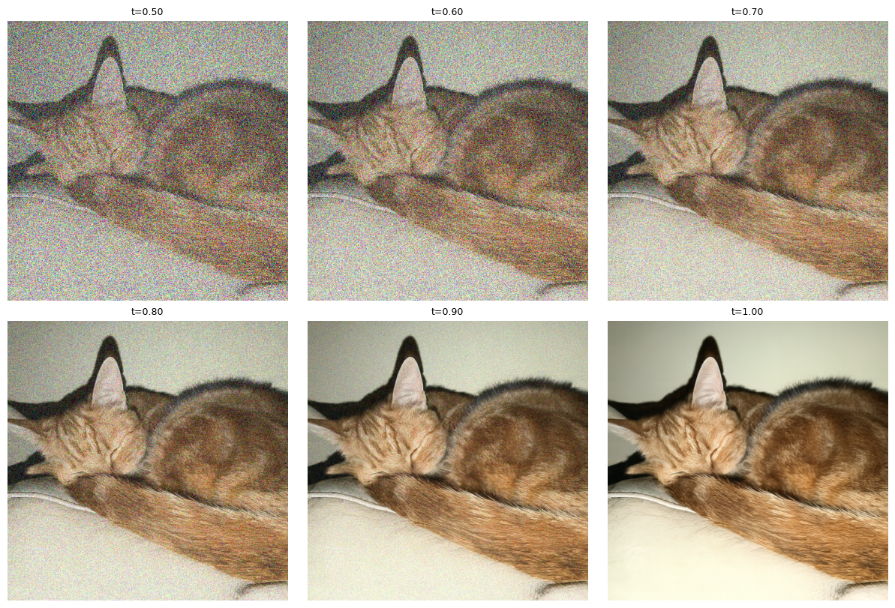
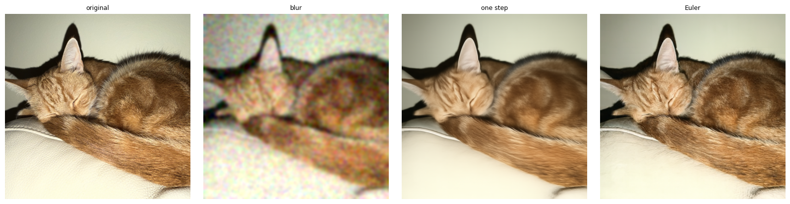
Starting from five independent Gaussian noise images, 50 Euler steps with the prompt "a high quality photo" and no guidance produces images with realistic colors and textures for portraits with vague and incoherent subjects.
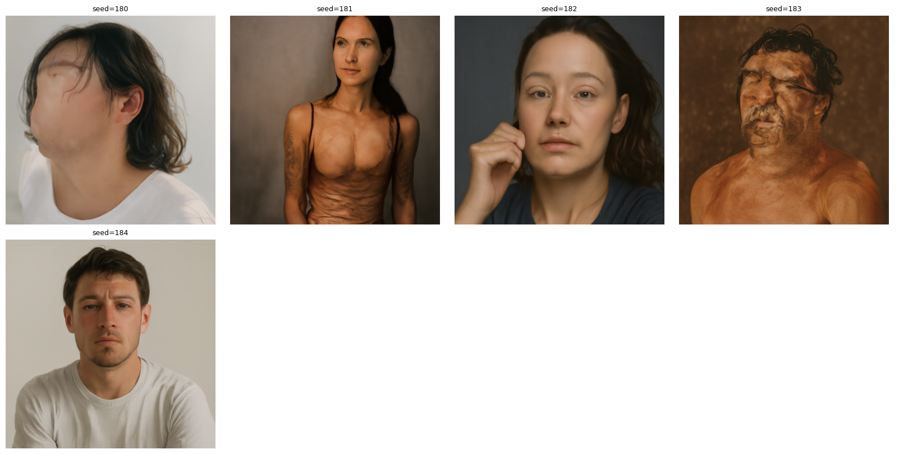
Using classifier-free guidance, we can generate images with better prompt alignment and image quality.
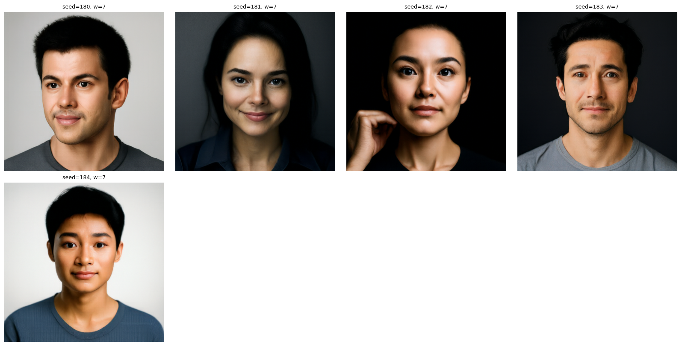
By adding noise to an image and denoising it with the flow model, we can edit the image. Below is the campanile edited, as well as a picture of my cat Benny and some flowers.
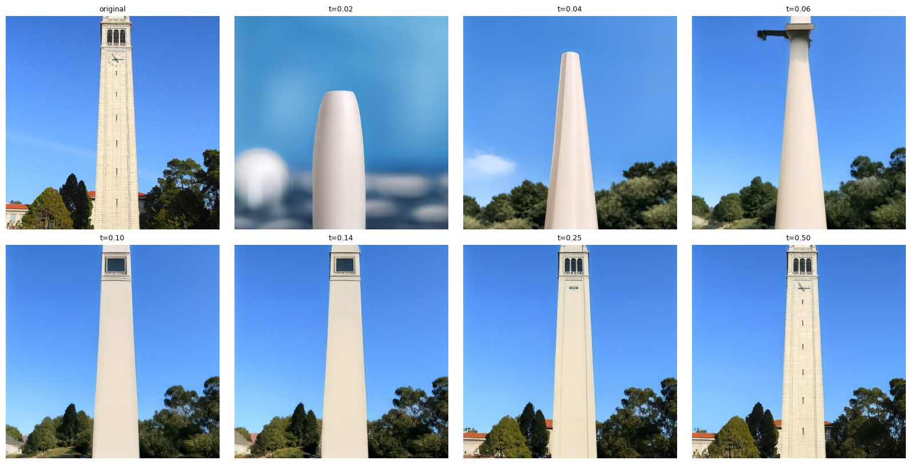
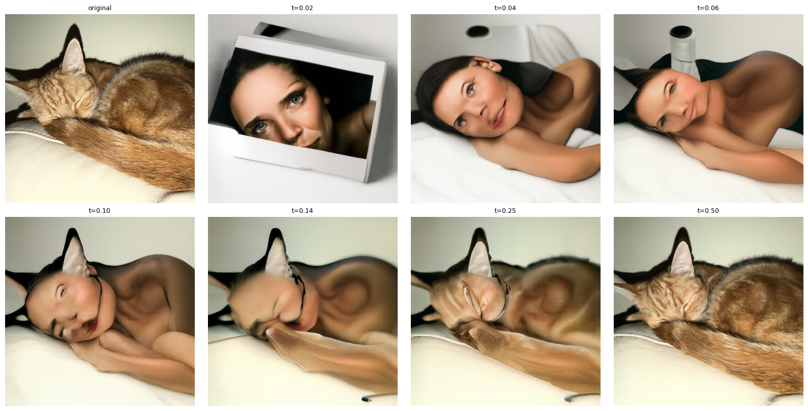
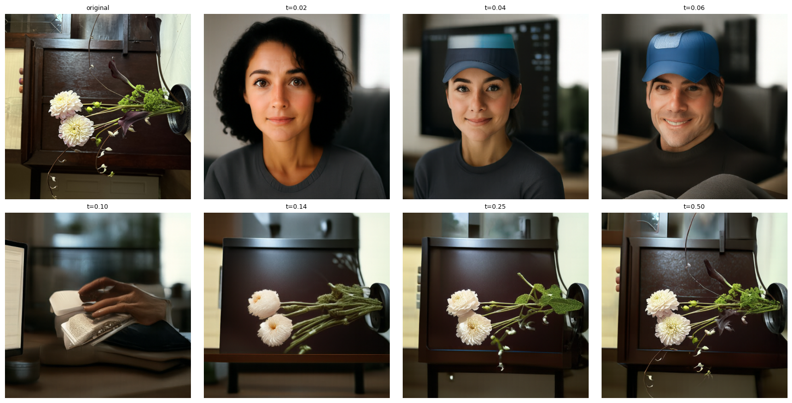
Below are examples of paintings and sketches projected onto the natural manifold.
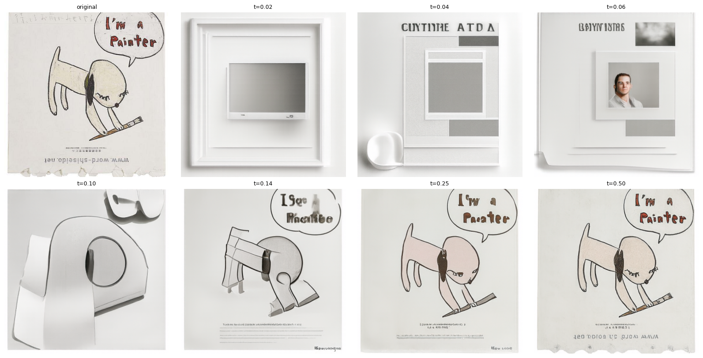
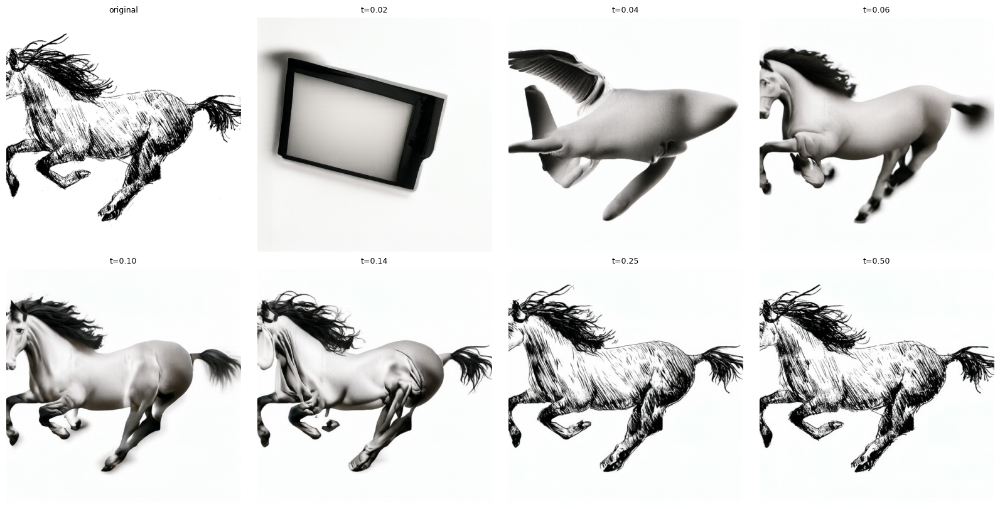
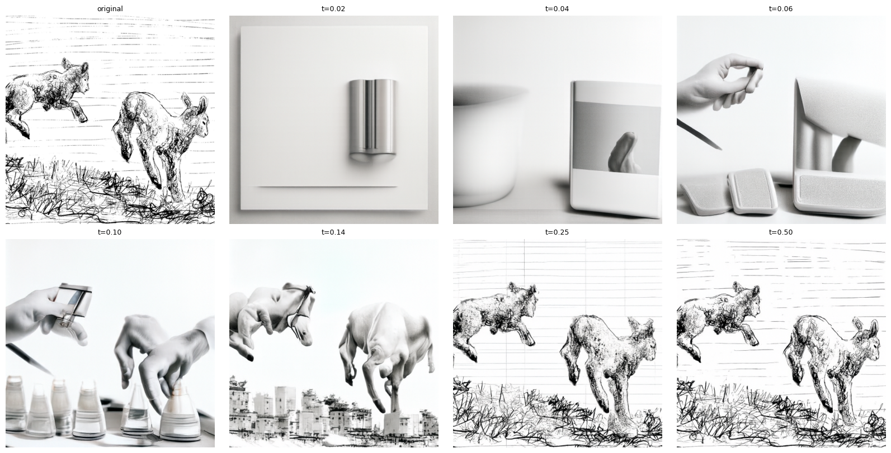
Using the same image-to-image editing technique, the below images are generated with modified prompts, other than "a high quality photo."
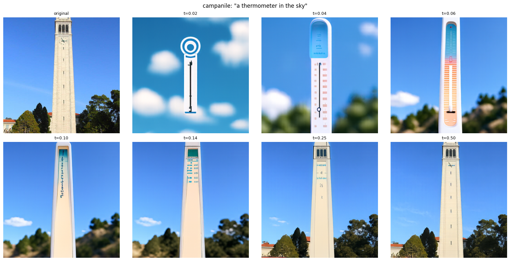
a thermometer in the sky">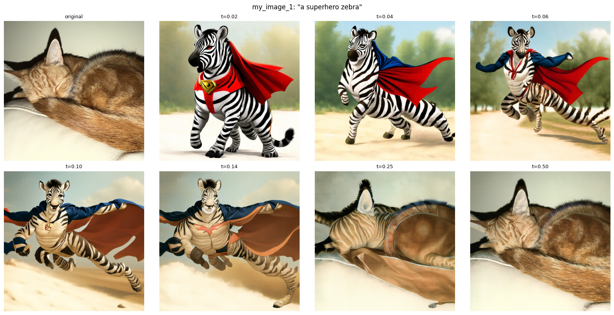
a superhero zebra">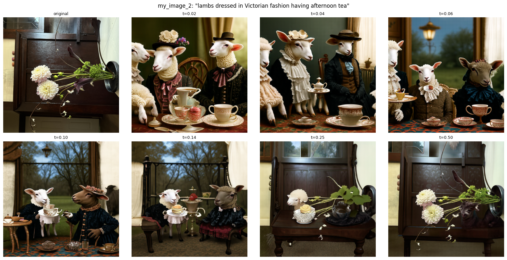
lambs dressed in Victorian fashion having afternoon tea">